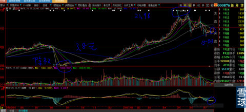
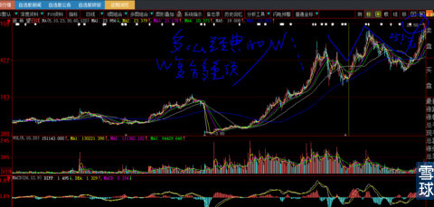
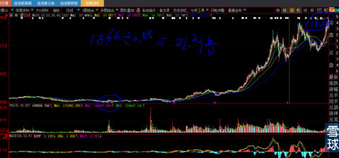
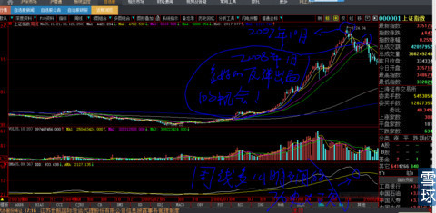
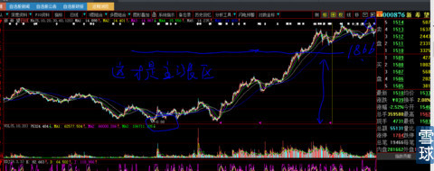
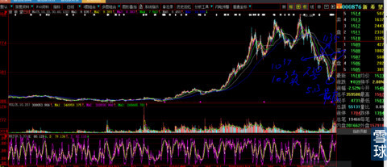
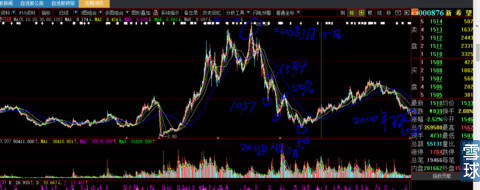
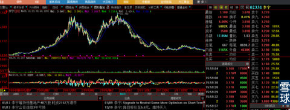
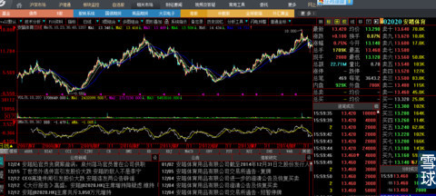
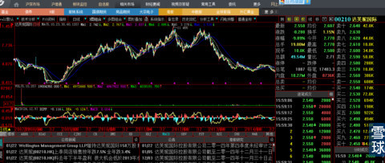

请注意，我说这些大话绝对不是为了浅薄而狂悖的自吹自擂，而是为我的财富人生那么大的起伏打下伏笔。
2007年7月，我那些事业有成的同学、亲戚脑残粉被股市虚拟经济的快速财富增长激起万丈欲念。战绩是最好的信用背书，大家只差跪下求我签下盈利30%归我，亏损不负责任的协约书，我操盘的资金一下子增长了10倍。
从来没有玩过这么多钱的我，不知道是上天捉弄还是人性的贪念，根本没有想过几百万与几千万的操作会有巨大的心理差异。我当时脑海里所有想法就是：3000万资金1年就算盈利1倍，我就可以分到900万，下一年就是1800万......就像“兄弟分雁”寓言一样，大雁还在天上飞，就开始计划各自分到多少、要换什么样的汽车.....。把14岁时妈妈对我到底申报什么专业学校的教诲全部忘到脑后“天上飞的凤凰再好看也没有手里攥住的一只麻雀稳当”（妈妈的教诲今后会写一个系列，让大家见识一下普通老百姓的睿智）。
钱多了，想法就变了，无论是斗志还是自信开始减弱，恐惧开始随着绝对数额的起伏而惶惶不可终日，白日梦却一点也没有减少。
从我对自己以上的分析，你们就可以窥测到基金经理、私募基金、公募基金，为什么要死守一只股票不敢在技术已经明确的底部进场、在那么明显的头部出场，还美其名为《时间的玫瑰》。他们这样操作的最核心原理就是：用10年、20年的眼光看，由于基数都是以数亿、数十亿、数百亿为计量单位，就算分到10%，这辈子拿到手的财富也是惊人的。他们操盘的资金是大象不是老鼠的尾巴打一百棒子肿起来也吓不了人一跳。
公募基金还有情可原，他们有制度限制仓位不能低于一定%硬性约束，因此公募基金在历史性大盘见顶后业绩会一落千丈，我始终搞不懂买公募基金的人为什么不懂这个制度缺陷在高位及时赎回，还在做长期价值投资的美梦。
2007年7月20日、2008年1月17日，2008年7月25日、2008年11月6日，2009年2月11日，这5个日子是我凤凰涅槃 欲火重生的重要日子。
在2007年7月20日这一天我全仓15.18元买入新希望。你们复盘回首那段遍地百元以上股票时光，就可以看得到我选股票的功力。
新希望是民生银行第一大股东（还没有发H股），每股隐含民生银行股权1:1以上。那时新希望的总股本6.3亿股、流通盘3.2亿股，每股收益超过1元，含权的民生银行是成长最快的民营银行，未来的盈利绝对额会成倍增长。不出意外的话“新希望”很快每股收益会超过2元以上。事后证明，逻辑的分析分毫未差，但是账户的资金却被腰斩再腰斩。并且“新希望”在“民生银行”董事长后几年说出：民生银行利润总额翻倍高到我们自己都不好意思的2010、2012、2013、2104年代，新希望的每股利润却严重下滑，其主业并没有利润下降，为什么？这个话题今后再讲，不要以为那么好形象的企业家杀散户的时候会有一丝一毫的心存慈念，一定是毫不手软即使他天天标榜吃斋念佛。反正想靠《时间的玫瑰》方式在中国股市发大财，即使再未来20年也是不可能的。就算你手持大牛股，也绝对超过不了理财产品10%利率年复一年的复利收益。不懂的、悟不出来的自己去算、去想。我就搞不懂那些美其名“长期价值投资”的人为什么要参与这么大跌宕起伏的股市而不买高额的理财产品夜夜安枕。不要告诉我“理财产品也有垃圾”，那是你连最基本常识的判断都不稍加分析瞎买。

时间过的很快，1个月后，新希望以涨停板的方式达到24元，我的账面盈利已经是58%，这个时候，我根本不看盘的，天天忙于工作，因为我脑袋被未来可以分到多少只“大雁”的幻想所挤扁。再过3个月，11月26日股价跌回到16元，利润全部抹平。注意，这个时候大盘已经在1个月前的2007年10月16日就创出了历史性大顶6124.04点。凭我的技术和经验，最谦虚的说法也是：大盘见顶已经有预感了。但是我的头脑已经完全被“卑鄙的私心利益”+书本知识所禁锢，你们去读波浪理论中关于“大盘见顶、有些未完成技术图形股票会继续牛股之旅”的例子。可见每个人都是找最暗合自己内心最受用的细节安慰自己，总以为自己是最幸运的那只鸟。
又过了3周，新希望股价果然在大盘见顶长达3个月后的2008年1月14、15日两天，反复触碰25元股价。大家看看，它正在构筑多么经典的W复合多重头部？就算是不是W头部是事后才可以知道，最起码上次从24.19元跌到16元再涨回到25元，这是多深的反弹啊。凭我的技术功力，怎么可能不知道就算再走牛也因为上次套牢盘的兑现需要再次回调一些（这种功力终于在它跌到7.63元的时候把我拯救出来）？可是，人心一旦被丑陋的私心杂念所蒙蔽，上帝也救不了他。我的心早就被“天上的大雁”所带走。就像彭德怀骂博古、周、李德和刘伯c“仔卖爷田不心疼”，彭与刘就在那段历史结下深怨，导致50年代彭刘双双悲剧。见下图。

就算不看技术分析单看股价，短短两年不到的时间，股价从复权后的0.88元涨到25元，整整涨幅21.2倍。也不想想为了未来可能的再30%利润甘冒已经涨幅高达21倍风险于不顾，真是猪油蒙了心。见下图

此时大盘已经见顶，见下图；

如果用“对数图”去观察（见下图），新希望图形中“最有油水的低价爬升阶段”早就已经成为过去。股市赚钱的最大秘密就是低吸历史最低筹码，相对长时间持股，只吃%涨幅最长的一段，而不是绝对额最大的一段（让你们坚守红太阳就是这个原理）。
例如：中国船舶从8元起步，走到150元时，涨幅已经高达18.75倍，即使后来再涨到300元再有150元的差价比前期所有涨幅绝对额还高，但是%也只是1倍。不要屁股决定脑袋的说300元是成本价8元的37.8倍去招摇撞骗，300元对于150元就是只涨1倍，这150元的收益远远比不上你8—150元的N倍收益。
就算你是8元买进的好吧，股价到150元的时候你的种子资金就是150元，不要认为你买的便宜，成本就低，要随时提醒自己“150元价格如果我出局再买别的股票，别的股票的成本就是这150初始成本的开始计算，这150元在你心里一定会坚定的认为就是本金。不要自欺欺人的说“我买的很便宜，我就是不怕它跌，看它能跌到什么时候，反正也迭不到我的成本去”。如果是这样，股价大幅下跌后你就不要椎心顿足，就不要整天的怨天尤人。不是我诋毁人，你们去看看但斌所有的文字，是不是这样不断的给自己打气、辩解？职业投资人不知道起码的风险控制，还扯大旗作虎皮拉巴菲特做垫背。
就这样，我放弃了2008年1月17日上天已经给过我1次机会后再1次机会，并且是大盘见顶下跌很深了，我的股票还创出了历史新高。

这时候，我买来了《时间的玫瑰》，一下子吸引了我，简直就是针对我内心的安慰需要所写。更加坚定了我持股的决心。就如同心理学：绝大部分时候我们看到的世界往往是自己心得折射。
2008年4月22日，股价跌到10.57元，有《时间的玫瑰》这本书撑腰我信心满满，等来了14天之后就反弹到15.84元涨幅高到49.8%，已经被洗脑的我，根本无视长期均线已经大缝隙发散反压的事实，置之股价短期反弹50%这样的高度堪比庄股主升浪高度而不顾，仍然做着未来“分雁”的美梦（现在知道我为什么那天提示先9.7元先出掉“海润光伏”原因了吧）。随后仅仅1个月的又一轮下跌，股价跌到7.63元，这可是只有15.84元的一半呀，涨回15.84元需要100%的涨幅才够。当我明白这一切的时候，当天就把家里所有的有关股市书籍全部烧掉。
从2008年1月整整半年等来了2008年7月25日这个关键的日子。
这一次，回归本性的我，技术+经验把我重新从堕落的心理深渊拯救出来。股价从2008年6月20日7.63元起步，9天后反弹到9.79元，10送1赠1合计10送2除权，再5天后涨到7.11元，稍微再忍耐几天后，从2008年1月整整半年等来了2008年7月25日这个关键的日子，我毅然决然的按照技术要领在12.03元全仓抛出新希望。实际抛出价12.03元*20%送股=14.43元，比7.63元的涨幅89.1%。比我买入成本价15.18元亏损幅度5%，比最高股价25元时浮盈相比亏损42.3%，要知道，哪个时候大盘跌去了72.9%，看仔细了是跌幅72.9%，无数的牛股基本是打了2折、1折不等。
但是，我获得了新生：1、摆脱书籍与心灵的困扰；2、获得了宝贵的种子资本金“现金为王”的主动权。

后来，时隔两年之后的2010年7月15日，新希望股价还在7.78元趴着，比我在2年前卖出它的价格12.03元相比，还需要46%的涨幅才可以达到。见下图，这个时候，我的账户资金早就涨回到大盘10000点以上的位置创了新高。

现在转入本帖题目的主题：他们为什么那样干？
一、他们是谁？
当然是代人理财的人罗（当然是不包括干活的小职员啦，他们还够不上资格）：公募基金、私募基金（这个好很多）、信托资金等等，只要是利益决定脑袋的事情，就会那么干。我敢断言，他们在夜深人静的时候，一定会认为自己才是这个世界上最聪明的人，因为他们早就跨越了所有的心灵羁绊，不是戈培尔所称谓的普通大众那种心理素质中的一员。这是人性贪婪、恐惧、见小利而忘命、遇大利而惜身、利益决定屁股、屁股决定脑袋所决定的，不是道德缺失、道德见解差异决定的。当然，他们大家会不约而同用最华丽的辞藻把自己的形象装扮得特别有能力、敦厚、睿智、长远。而且会找旁证的榜样去证明自己这样干是有理有据，榜样的力量是无穷的嘛。我们党玩这些就是专家中的专家：董存瑞、雷锋、焦裕禄、孔繁森、邓亚萍等等，都是服务于一定的目标与目的。
看看希特勒的宣传部长戈培尔是怎么讲的：
1“我们的宣传对象是普通老百姓，故而宣传的论点须粗犷、清晰和有力。”
2“真理是无关紧要的，完全服从于策略的心理。”
3“我们信仰什么，这无关紧要；重要的是只要我们有信仰。”
4“宣传的基本原则就是不断重复有效论点，谎言要一再传播并装扮得令人相信。”
5群众对抽象的思想只有一知半解，所以他们的反应较多地表现在情感领域。情感宣传需要摆脱科学和真相的束缚。”
6““如果撒谎，就撒弥天大谎。因为弥天大谎往往具有某种可信的力量。而且，民众在大谎和小谎之间更容易成为前者的俘虏。因为民众自己时常在小事情上说小谎，而不好意思编造大谎。他们从来没有设想编造大的谎言，因而认为别人也不可能厚颜无耻地歪曲事实……极其荒唐的谎言往往能产生效果，甚至在它已经被查明之后。”
7“大众传播媒介只能是党的工具，它的任务是向民众解释党的政策和措施，并用党的思想理论改造人民。”
8“宣传是一个组织的先锋，宣传永远只是达到目的的手段。”
9“宣传如同谈恋爱，可以做出任何空头许诺。”
10“即使一个简单的谎言，一旦你开始说了，就要说到底。”
11“谎言重复千遍就是真理。”
12“报纸是教育人民的工具，必须使其为国家而服务。”
13“报纸上的言论，应当趋于一致的目的，不能被出版自由的邪说所迷惑。”
14“报纸的任务就是把统治者的意志传递给被统治者，使他们视地狱为天堂。”
15“人民大多数比我们想象的要蒙昧得多，所以宣传的本质就是坚持简单和重复。”
16“必须把收音机设计得只能收听德国电台”
二、他们为什么要这样干？
按照心理学家Abraham Harold Maslow的研究成果揭示，人的5大需求中”安全需求“排在仅次于"生存需求"之后。
试想如果你是有着盈利分红权利的操盘代理人，你心里首先会想：10亿资金，我买一只不会退市的类似”艺术精品类型“的股票，例如银行、茅台等等，他们会随着社会创造财富的自然通货膨胀规律，股权价值20年后涨幅达到200%30亿元，我就算分红10%也有2个亿，凭我手中的500万元，怎么可能有绝对安全把握做到2个亿？翻看自己过往多次持股被打回原形的业绩经历，回首牛人们此起彼伏你方唱罢我登场的阅历、经验，怎么做还用人教吗？这其实是一个概率偏见的问题。
1、因为”安全感“：买彩票的人2元钱中了500万头彩，电脑和人脑都会去计算概率到底是亿分之几。事实是对于中头彩的人而言就是中奖率100%。对于持股被腰斩再腰斩的人来说，财富就是被洗白了90%，就像你没有房子，不可能被国家统计局房子自有率统计，被算成你有房子一样。你的财富获得他人无法分享，你的损失一样不可能有人替你分担。明白了这个道理，那么，我长期持有银行、茅台20年到期会有2个亿分账的概率就是100%，这就是我的目标，我实现目标的概率就是100%，在这样”安全“的前提下，再去追涨杀跌除非我是疯子。再说了，是财富游戏就有财富效应，等到风起的日子，又会有新人被财富增长%的故事所激励而全然不顾这个%的时间成本过程，购买新的基金进一步扩大未来收益（就如同你们买股票第二天就问为什么不涨，却无视其他涨几倍股票中间经历的时间过程一样）。
2、这只是概率偏见的问题。广为流传的大猩猩投标选股与职业经理废寝忘食选股的业绩基本相同的段子，这个段子有一个严重的硬伤不被人揭穿：人不仅可以买入还可以判断卖出，猩猩却做不到这个思考动作（不要辩解猩猩也会再做投标卖出动作）
3、他们对自己的“能力”自知之明。所有的基金经理，基本上没有通过做“实业获得巨大成功”的经历。可他们的投资对象却是一个个典型的实业型（格力、美的）、创业型（创业板）、管理型（大型民企国企）对象，想起这些就觉得非常搞笑。其中的牛人大谈自己曾经当工人经历，拜托大哥，工人知道个屁呀。就像大公司小职员怎么可能知道企业成功的诀窍和感悟？我们看到的是：每当大盘跌到深不见底的时候，总是实业资本家先开始进场赎回、增持自家股票，股价还会继续下跌很深，这些卖出打压股价的是谁？当然是技术派的资金罗。每一次大盘最后恐怖的杀跌赶底，都是大基金干出来的。
一切根源都在于：纵然你是人精中的人精，也无法有见识、有机缘、有机会当一次慧眼识珠的伯乐。
上世纪80年代初，国内的房地产企业把商品房设计交给港人设计所，报纸上那些民族主义者大肆批判，大骂他们是资本家的走狗。我说:国内的建筑设计师连马桶都没有见过，他们怎么可能设计出符合人性需求的商品房？
前段时间朋友请吃饭，其乐融融。其中一位江西专程来拜访的耐用品实业老板才喝了2杯酒就开始向我谄媚，感觉真的很受用。再对喝2杯后，他说：“阿里巴巴即将在美国上市，马云就是个汉奸，让日本人成了世界首富”。我知道他的本意是挑起一个当下媒体热门话题，但是，我仍然忍不住勃然大怒：”马云对期初18个投资合伙人穷说苦说三天三夜才筹集50万元人民币资本金，当时阿斯达克已经崩盘。时过2年，马云到日本找到孙正义想募资500万美元，还没有说15分钟，人家孙正义开口就是3000万美元还贴心的问：够不够？那个时候，有一个中国人敢投他吗？建设银行跌到3.5元，那些天天义正言辞“阴谋论”骂建设银行汉奸给人家美国人输送利益的正人君子跑到那里去了？其他人这么说，我会一笑而过，你身为一个企业老板，最懂得创业的艰难与企业经营的岁月历程，竟然愚蠢到这种地步，要么你就是笨蛋，要么就是有道德缺陷，你说天底下谁会跟一个笨蛋或者缺德的人称为朋友”？在座的人拦都拦不住我的痛骂，直到他认错告饶。
在这里教大家一个生活常识：1、当你不了解对方时千万不要把宗教信仰、价值观作为首次聊天话题，直到对方告知你后再迎合；2、不要打听人家的隐私，有必要人家会自己告诉你；3、可以稍微有性话题但要适可而止，直到观察对方是否愿意与你放肆谈论，这表明对方是否对你已经完全信任还是谨慎戒心。
4、企业成长与死亡无法预测长期，只能波段操作。否则就是等死。
首先简单职业介绍：1、七年国企经历，南下开始外企经历至今；2、四年外资大百货连锁零售业；3、八年著名商标企业从初创到初具规模年销售2.5亿人民币高管经历；4、十一年从8亿成长到130亿零售规模品牌高管至今，共计30年职业经历。
30年职业的经历，使我不仅仅是了解小企业如何快速成长，并且对大企业成长、竞争、官僚、衰败等核心因素亲身参与。所以，看待企业的财报、公告、预期具有自己的经验值的附加。对利润的实现与获得、利润规模大小、利润再投入或者现金沉淀有自己的独立思考。并付诸投资中去。
第一、小企业成长很快，一个生活用品企业，从开始到2.5亿元销售规模，通常需要8年，这是指2002年之前的消费环境与币值购买力而言。冲出来的往往成长性特别好，但是利润绝对额比较小，净资产收益率很高。这个时候要看用多大本金实现的利润判断企业经营高层的能力。
第二、企业从10销售规模（可不是钢铁、汽车行业哦，我这些都是举例一个客单100元不到硬生生一笔一笔实现的）增长到130亿规模需要8年。之后会开始有管理的大麻烦，最重要的原因是最高所有者同所有人性一样，内心膨胀导致，除非企业经营受重创，一般企业最大所有者很少会回归从前的状态，所以任正非、柳传志等等这些人真的是中国的经营之神。
第四、牛鞭效应（不懂得这个经济学原理的可以百度），正因为了解这一切，对企业的估值，会有一定的把握，知道如何判断股价的低与高。由于深谙”牛鞭效应原理“，对企业以外的虚拟投资行为是否过低、过高有一个大致的认知。也就是市场参与大众（大基金、私募、散户）的心理、受恐惧打压、被鼓舞后的分别不同的失去理智的迷信程度有多年的经验，就会在牛鞭效应的指导下，通过K线、成交量、均线角度感受最低与最高时刻的到来。大众自由交易市场，情绪化要占90%重要性，上市企业总来没有被理性的合理估值过，要么估值过低、要么过高，从来就没有合理这么一说，这样说的人就是在胡说八道，根本没有融会贯通理解创业、企业、利润分类、市场不同时期应该有不同心理状况等等。并且全部都是以讲故事为主。我这样说的理由是：投资企业全部都是为了利润，而利润又被人们分为可以10倍市盈率、可以50倍市盈率、可以100倍等等，结果被大家都认为全部符合逻辑接受就是一个明证，难道利润的钱长得不是一样？是的，大家会说小企业成长快所以要给高估值，那么小企业死得也快这又怎么理解呢？所以我说，其实市场的一切的一切都是在讲故事，这个我倒是与索罗斯不谋而合，你们看看他退休致辞就知道了。唯一的原因是人们都希望故事成真，美梦随之成真。大资金会操纵引导之、明白人会利用之、无脑的大众中相信的人是大多数，当然也是最终底部割肉、高位买单的人。
第三、大企业一定会有麻烦，在它们被极度低估的时候，大胆做多，到超过牛鞭效应不能接受的程度时，要坚决离场，之后数年都不能碰，一定会轮回原地，包括银行。不明白的，就去花5分钟时间读一读”松下幸之助“在几十年前的一篇对企业家的演讲《大企业保持活力的唯一方法：拆散它》大概是这个演讲题目。
下面我举几个例子就知道，长期价值投资你会最终落得一地鸡毛。
下图是港股”李宁”10年股价图。2008年还是北京奥运会点燃火炬的火炬手。今天企业已经被亏损折磨得奄奄一息。其中有早在2007年就潜伏其中的欧美数百亿美元规模的大基金至今深陷其中不能自拔。李宁股价图，下图

如果你硬要说是市场环境不好，那么安踏体育为什么股价扶摇直上？它可是挤占了几乎全部李宁为了升级换代与阿迪达斯、耐克竞争而淘汰的市场。原来市场的霸主李宁就再也无能为力夺回原有主动放弃的阵地，核心原因就是：企业是人经营的，人变了，市场没有变。只有企业所有者自己在心痛自己的企业，还在不断的砸钱进去。要知道老婆都50岁了，还能再生孩子的概率太小了，还不如找个年轻小姑娘保险，把仅剩余的那点资本金投入成长企业让人家帮你赚钱靠谱一点，但是人性决定了他不会这样做。所以，我骂那些长期投身早已经被数十年时间所证明猪一样管理层的人是：贱人。
安踏体育股价图，下图

上面的例子我就是想说，曾经那么牛逼的品牌，谁会预知到几年后股价跌得如此之惨烈？多少价值投资者在严重亏损后会放弃坚守？投资不要轻易相信谁谁一定会成功，例如”白云山之王老吉“，你怎么就那么肯定哇哈哈不会干掉它？哇哈哈为什么不可以被许家印的足球瓶装水干掉？企业的经营是永续的知道死亡，市场是牛鞭效应有波谷的，就算最后”白云山.王老吉“最终冲出来如同“格力”万科“”腾讯”“阿里巴巴等等一样牛逼，反正你是长期价值投资，市场永远会开下去，在牛鞭效应明显的大众市场，大波段操作是必须的，又不是要你天天做T，2年买卖一次总可以吧？这样的保持警戒，最终有一次会救你的命，例如”李宁“、四川长虹等等等等。就算贵州茅台，理论上库存了多少原酒可以折算价值数千亿好了，每年它只能卖出那么多呀大哥，这些价值是要一年一年兑现下去的，时间才是是财富实现的最大秘密，市场的牛鞭效应一定会给你再次进入的机会，反正你以前的投资原则是10年不动，那么稍微调换一下持仓方式又何妨：筹码、现金、筹码。他们敢交换方式，第一是不相信市场是情绪化的话，第二、是对自己完全没有自信。我们再来看一个例子；见下图，达芙妮国际。

达芙妮从2009年的1.11港元（分红除权为0.415港币）上涨到2012年4月的11.84元，今天的股价是2.55港元，相当于人民币2.04元，净资产每股3元港币，它的总股本16.49亿股，折算总市值42亿元港币，折算成人民币大约33.65亿元。我们不说它账面货币现金有多少，起码没有1分钱的银行负债，企业还在盈利只是盈利减少，销售规模并没有下降多少，可是股价却被几乎打回6年前，看趋势还有再下跌一城的机会，那么为什么人们会杀跌逃跑？难道卖出的人都没有常识？就算品牌转让，估计购买者出价50亿元人民币也不肯转让。这就是我说的：市场牛鞭效应情绪化带来的结果，也是网购电商未来潜力无限实体店都会死亡分析报告被不断重复传导的放大效应，是人们对实体店估值朝令夕改的原因。可见长期投资是一个风险多么巨大的不理智行为。
再以中信证券为例，股价要回到90元，我们就算不对比2015年此时与2007年彼时市场的风险偏好，同比例计算对应的利润绝对值，也需要每年340亿元净利润才可以满足基本条件，它2013年利润52.43亿元，2014年77亿元，你认为它2015年会达到340亿元吗？既然达不到，为什么今天证券的股本比2007年已经扩大N倍，还有那么多的傻逼在我这里对我嗤之以鼻、示威的说大牛股要涨10倍。好，就算有可能2015年涨到90元，你得担多少心受多少怕？浙江龙盛现在的盈利水平以及潜在盈利水平远远超过当年的中信证券，而且更具有行业进入高门槛，反而会长时间的停留在14元呢？所以说，股票市场根本没有”合理“估值这么一说。很大程度上是”牛鞭效应“的结果。我们的挣钱方法，就是发现”牛鞭效应“在何时、何价开始发生波谷的高潮以及高潮在可能感知市场迷信程度到达的高度时坚决离场。
二、他们怎么干的呢？
哇，这篇帖子今天写完会好长啊
写累了，今天不写了，明天要上班，今天要早睡
待续，后面的才是你们需要的真东西，无论是实业创业、企业管理、金融投资，以上仅仅是过程描述。先休息2个小时。
公司员工为什么不买自己公司股票？
欲言却止@炒的是心:你说的就是文章后面那几句“股票市场根本没有”合理“估值这么一说。很大程度上是”牛鞭效应“的结果。我们的挣钱方法:就是发现”牛鞭效应“在何时、何价开始发生波谷的高潮以及高潮在可能感知市场迷信程度到达的高度时坚决离场。"
炒的是心@欲言却止:
刘一男@炒的是心:楼主大牛，拜服！恭候您的续作！~~ 不过，晚辈在这里小小地指正一点：价值投资 ≠ 长期投资（或 长期持股）……即：当企业没有投资价值的时候，所谓的"长期持股"就是“伪价值投资”.
炒的是心@来一桶金: 今天看到一个热心粉丝，帮大家百度解释“牛鞭效应”专业术语，大意是供应链的意思。对，基本正确。但是也说明他离我的思维核心还有十万八千里。
政府、企业管理的追求目标（政府干预、经济、政治、安全等等所有方面），目的都是尽量减少、缩小牛鞭效应，例如企业供应链管理，恨不能做到全部无缝连接，尽量把数量、价格的波动曲线管理成一条直线才好。这种事情如果能够发生，那么经济的波动就不会再有，世界上所有的浪费就不会存在 。金融市场就绝对不会有人，因为大家直接存款就好了呀。
只有反向思维的人（索罗斯）才会通过人为的各种方式（筹码、媒体、制裁、法律），放大牛鞭效应，扩大价格、数量曲线的波动。
如果没有石油价格的腰斩再腰斩，哪有那么大的做多空间？反之，哪有那么多的做空空间？
再说一遍：股票大跌大跌再大跌就是股市最大的利好；股票大涨大涨再大涨就是最大的利空。股指涨到10000点，就算是习大大亲自去证券督阵做多都没有用。股指跌到2000点，一个火星、一个李大霄所长说涨就能够大涨起来。
抚仙小海怪@炒的是心:现在的跟着习大大做多中国就是当前中国最大的牛鞭效应。每当看着有人说高铁要从新疆修到欧洲、从东北延伸至西伯利亚，跨国白令海峡，到达阿拉斯加、加拿大。就觉得人类太疯狂！
炒的是心@抚仙小海怪:
公司员工为什么不买自己公司股票？